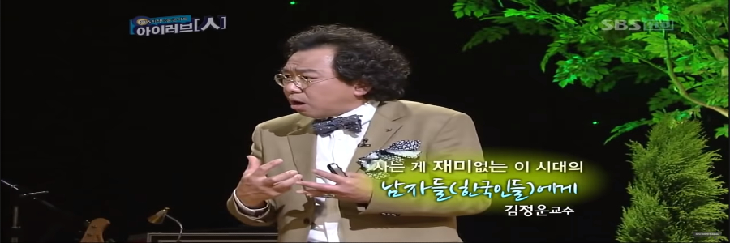

사는 게 재미없는 이 시대 남자들에게
Post by 손찬영
Posted on September 23, 2020 at 07:25 PM

사는게 재미없는 이 시대의 남자들과 그 가족들에게 힘이 되어 드리겠습니다.
시작부터 남자의 행복이라는 단어가 떠올랐을 때 조금 어색했다.
행복이라는 단어가 가장 기본적인 단어이지만
정작 직접 사용하는 경우는 없고
책이나 인터넷에서 무심하게 지나가는 경우가 많기 때문이다.
처음 주제 중에서 눈에 띄었던 것은
심리학의 패러다임 변화에 관한 부분이었다.
개인의 약점을 고치기보단 강점을 부각하여
약점을 같이 끌어올리라는 것이었다.
대부분 사람은 약점을 보완하려고 고생하고 지체하지만,
이 강연을 듣고 나서는 강점을 조금 더 끌어올리는 것에
노력해야겠다고 생각했다.
또한 우연과 관련된 긍정적 해석학적 순환을 설명하면서
축제와 휴식이 중요하다는 부분도 인상 깊었다.
한국과 외국의 일하는 모습을 비교해보면
한국은 일하는 시간이 휴식 시간보다
많을 수밖에 없고 외국은 워라밸*을
중요시 여기는 모습을 오래전부터 볼 수 있었다.
요즘은 한국도 워라밸을 중요시하는 사람이 많아져
회사도 변화하는 추세이지만 취업한 친구들을 보면
아직은 더 변화 하는 것이 좋을 것 같다고 생각을 하였다.
이 강연을 보면서 기억이 남았던 교수님의 일화나 문장은
'삶은 순서 바꾸기이다.'
'재미없는 삶은 무효다.'
'독일 통일에 대한 비화',
'한 시대를 발전시킨 동력이 다음 시대의 발목을 잡는다'
라는 것들이 크게 마음에 와닿았고 기억에 남았다.
특히 역사의 변증법을 설명할 때 부모님이 꼭 한 번쯤 하셨고
많이 들은 말은 '근면, 성실한 사람이 성공한다는 것이었다.'
하지만 김정운 교수님은 근면, 성실이라는 수단적 가치가
지금 한국사회의 문제라는 것이다.
이제는 근면, 성실이라는 단어로
기업에만 지속 가능한 경영만을 제공하는 것이 아닌
궁극적 가치인 근로자의 재미와 행복을 보장하고
근로자들이 지속 가능한 삶,
한마디로 워라밸을 제공하는 것이 중요하고
근로자들도 추구해야 한다고 말씀하셨다.
나는 회사가 근로자들의 워라밸을 충분히 보장해 준다면
회사와 근로자들이 모두 만족할만한 성과와 기업에 있어
장기적으로 더 좋은 성장이 될 것으로 생각한다.
이번 강연을 보면서 이때까지는 부모님들 말처럼
'그냥 열심히만 하면 성공할 수 있다.'라는 생각에서
'내가 잘하고 좋아하는 것을 열심히 그리고 즐겁게 해보자.'라고
생각하게 되었다.
무엇보다 막상 쉬려면 주저하는 경우가 많았지만,
김정운교수님의 강연을 보고
휴식도 꼭 필요한 하나의 공부라고 생각하고
이 강연을 계기로 내가 조금 더 자신감을 가지고
나 자신을 좋아하게 되는 계기가 되었으면 좋겠다.
1) 워라밸(Work and Life Balance) : 일과 삶의 균형을 중요시하는 모습
Leave a Comment:
박철오
저도 이 영상을 보며 많은걸 느꼈습니다. 제게 가장 와 닿았던 교수님의 말씀은
'행복이란, 하루의 삶 속에서 기분 좋은 시간이 길면 길수록 행복한 것이다.
기분이 좋으려면 좋아하는 것을 구체적으로 정의해라.' 그리고 '지금 행복한 사람이 나중에도 행복해진다. 행복한게 무엇인지 알기 때문이다.'
였습니다. 이 말을 듣고 나서 당장 생각을 해보았습니다.
'내가 좋아하는 것이 구체적으로 무엇인가..' 아직 정확히 떠오르지가 않았습니다.
생각을 거듭한 끝에 마음을 정리하였습니다.
'반드시 매 순간 행복할 필요는 없다. 행복한 순간은 반드시 온다. 그 순간을 잘 잡아서 내가 무엇을 하면 좋아하는지 알아보자.'
이 생각을 마음에 깊은 곳에 보관하여 기분 좋은 시간을 늘려가며 행복하게 살아야겠다고 다짐하게 되었습니다.

정태수
인상 깊었던 장면은 남자의 행복이라는 것은 야망, 책임, 성공이라는 것들만 붙는다고 한다. 이것은 ‘사회적 표상’이라는 것인데 “가족은 단란하고 행복해야 한다.” 같은 사회적으로 고정된 개념이라는 의미인데 성공해도 행복하지 않고 야망을 가져도 행복하지 않다고 했다. 이미 성공하면 행복할 수조차 없다고 했다. 그래서 여러 가지 행복해지는 방법을 설명해 주시는데 도입 부분에서 설명을 잘 해줘서 재밌게 빠져들었다.
손정욱
삶은 우연의 연속이라고 설명한다. 하지만 사람들은 “해석학적 순환” 우연적인 사건들을 필연적인 것으로 만들어 놓고 필연성에 따라 행동을 하는 이 해석학적 순환을 계속한다고 이야기하며 이 해석학적 순환이 긍정적으로 연결 될 때 삶은 윤택해진다고 설명하고 있다. 그리고 긍정적인 영향을 미치기 위해서는 축제와 휴식이 필요하다고 이야기했는데 다시 말하면 지속 가능한 삶은 축제와 휴식이 필요하고 이것은 지금의 워라벨의 개념과 일치한다. 이 영상은 8년 전에 업데이트 돼 있던 영상인데 8년 전에 워라벨의 개념을 이야기한다는 것이 놀라웠고 지금 나에게 축제와 휴식이 무엇일지 생각해보게끔 만드는 강의였다.